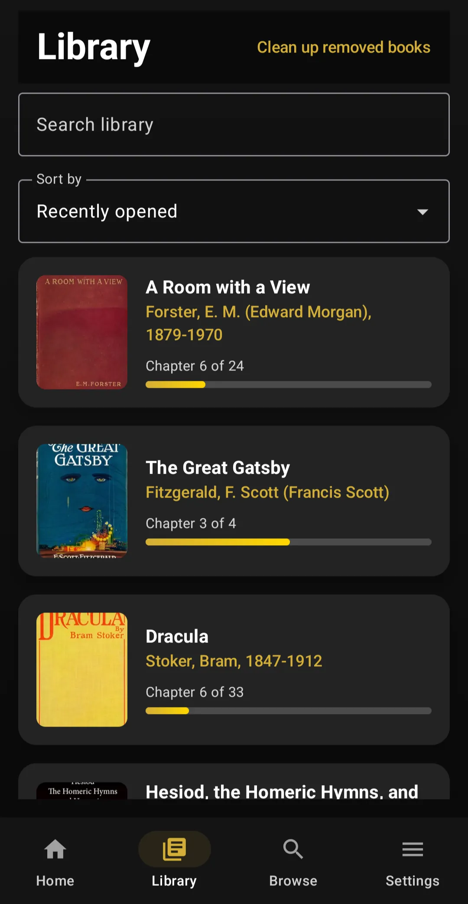
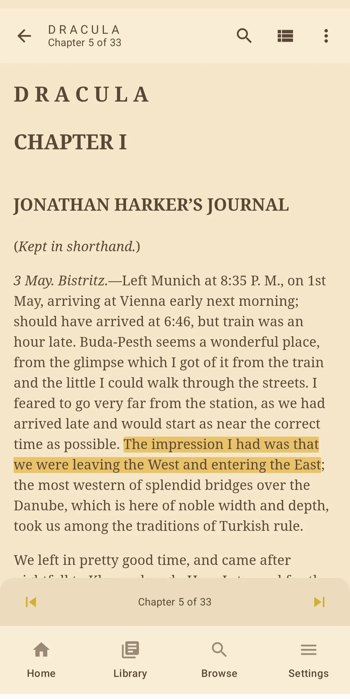
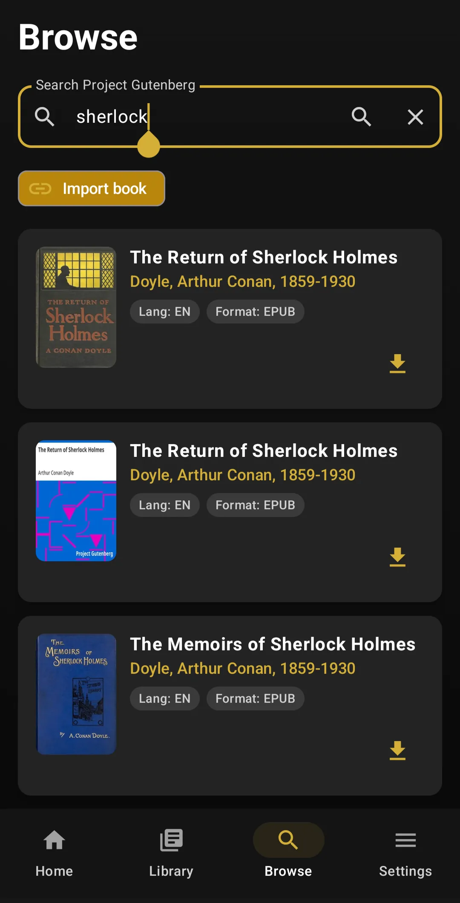
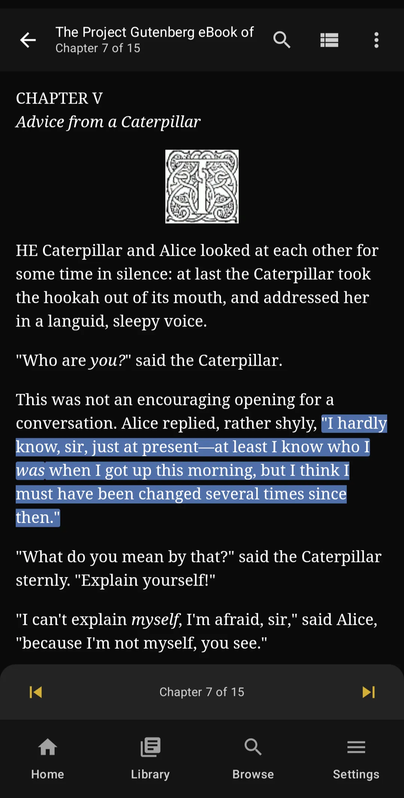
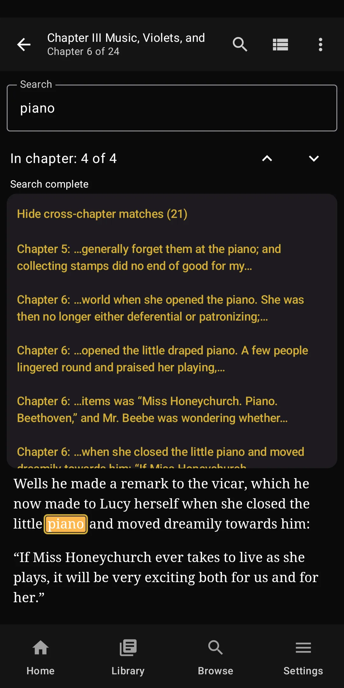

01
Browse Project Gutenberg
Search and discover thousands of public-domain books by title and author.
Guten for Education
Guten makes public-domain literature from Project Gutenberg easy to discover, download, read offline, highlight, and annotate on Android. Schools and libraries can simply recommend it. There is no institutional license or deployment process.
Android now. iPhone support is in development.


Free for reading and study
Students do not need Premium to read books, highlight passages, take notes, use bookmarks, share basic quote cards, or read offline. The free version is a full reading and annotation tool, not a trial.
Search and discover thousands of public-domain books by title and author.
Save books directly to the device for reading whenever they are needed.
Downloaded books remain readable without continuous internet access.
Return to the place where the student last stopped reading.
Mark useful or important places and jump back to them later.
Select and highlight passages while reading.
Add study notes directly to selected passages.
Review and search annotations within each individual book.
Search the current leaf or find matches across the book.
Select a word and use Guten's Define action to look it up.
Adjust font size, font family, line spacing, margins, and justification.
Choose options including Literata and Atkinson Hyperlegible.
Choose a comfortable reading appearance or follow the system theme.
Use leaf lists, previous/next controls, or optional swipe navigation.
Set a target in minutes and see daily progress.
Track consistency over time without requiring a school account.
See total reading time, books read, and books in the library.
Find downloaded books by title or author and sort the local library.
Use settings such as Wi-Fi-only downloads when data is limited.
Export and restore reading progress, bookmarks, highlights, notes, and other Guten data.
Create and share basic quote cards from highlights. Shared passages can help students recommend books and ideas to one another.
Share a selected passage as text through Android's system share tools.
Reader and navigation controls include accessibility labels.
Guten respects the device's system text-size preferences.
Why institutions might choose Guten
A school, library, ministry, or literacy program can simply link to Guten on Google Play. Students install the app and begin reading. There are no student rosters, institutional accounts, school licenses, or administrative dashboards to configure.
Guten is designed for Android phones and tablets rather than specialized reading hardware.
Students can download books when connectivity is available and continue reading offline.
Highlighting, notes, bookmarks, search, reading goals, and basic Share Studio do not require Premium.
No institutional license, student account provisioning, or integration is needed to recommend the app.
Progress, bookmarks, highlights, and notes are stored on the device. See the privacy policy for details.
What students can read
Project Gutenberg contains literature, history, philosophy, poetry, science, adventure stories, children's classics, and more. These examples are meant to show the range; educators can choose the works that fit their students.
Studying Homer? Ulix also makes Breaker of Horses, a dedicated Iliad and Odyssey reader for students who want a more focused Homer experience.
See Breaker of Horses →Project Gutenberg determines public-domain status under U.S. law. Users and institutions should follow applicable copyright law in their country.

Low-connectivity friendly
Once a book is downloaded, students can continue reading without a continuous internet connection. Guten also offers a Wi-Fi-only download option for readers on limited data plans.
Privacy and simplicity
Guten does not require an account and does not contain advertising. Downloaded books and reading data such as bookmarks, highlights, notes, and reading progress are stored locally on the device.
Guten does not automatically sync a student's reading history to a Guten cloud account. Students can export and restore a backup when they want to move their data.
Read the Guten Privacy Policy →Guten connects to Project Gutenberg and related catalog services for book listings and downloads, Google Play for optional Premium billing, and Sentry for scrubbed crash and reliability diagnostics.
See exactly what Guten sends and stores →Free vs. optional Premium
Premium is a one-time purchase for readers who want additional organization and convenience. It is not required to access books or use the core study experience.
Premium adds power-user tools. Reading, highlighting, note-taking, bookmarks, offline access, and basic Share Studio remain free.
The actual app
A few current Guten screens show the student experience directly. No invented interface is used here.


FAQ
Core reading and study features are free. Students can browse, download, read, bookmark, highlight, take notes, search, set reading goals, use basic Share Studio, back up their data, and read offline without buying Premium.
Yes. Highlighting and note-taking are free, as is reviewing notes and highlights within an individual book. Premium adds the cross-library Notes Manager and dedicated annotation-export formats.
No account is required to use Guten. As with other Android apps distributed through Google Play, downloading the app itself uses the student's normal Google Play environment.
No. Guten has no advertising network and does not use reading behavior for advertising or behavioral marketing. Read the Privacy Policy.
Yes. After a book has been downloaded, it can be read without a continuous internet connection.
No. A school, library, university, ministry, or literacy program can simply recommend Guten's Google Play listing to students. There is no institutional setup required for the free reading experience.
Premium adds Read Aloud, the cross-library Notes Manager, dedicated note and highlight export, Collections, a Pomodoro reading timer, and advanced Share Studio options. Premium is a one-time purchase.
Guten helps readers discover and read public-domain books available through Project Gutenberg and related catalog services. Guten is an independent app and is not affiliated with, endorsed by, or officially connected to Project Gutenberg or the Project Gutenberg Literary Archive Foundation.
Not yet. Guten is currently available on Android, and iPhone support is in development.
No form, sales call, license agreement, or institutional setup is required. Just share the Google Play link and students can start reading.
Get Guten on Google PlayCurrently for Android. iPhone support is in development.